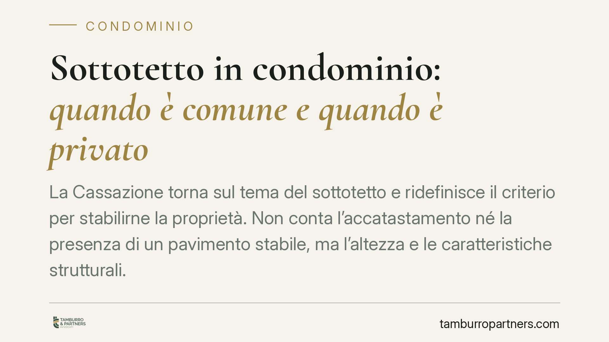

Sottotetto in condominio: quando è comune e quando è privato
La Cassazione torna sul tema del sottotetto e ridefinisce il criterio per stabilirne la proprietà. Non conta l'accatastamento né la presenza di un pavimento stabile, ma l'altezza e le caratteristiche strutturali. Una precisazione che pesa nelle liti tra il proprietario dell'ultimo piano e il condominio, spesso in conflitto sull'uso di questi spazi.

Il caso
La vicenda nasce da un contrasto frequente: il proprietario dell'ultimo piano rivendica l'uso esclusivo del sottotetto, il condominio ne sostiene la natura comune. La Corte d'appello di Venezia si era pronunciata sul punto, ma la Cassazione ha ricondotto la questione a un criterio più rigoroso, spostando l'attenzione dalle apparenze formali alle caratteristiche oggettive del vano.
Il sottotetto, cioè lo spazio compreso tra l'ultimo solaio e la copertura dell'edificio, non ha una natura predefinita. Può essere un locale autonomo, una pertinenza dell'appartamento sottostante o una parte comune. La difficoltà sta proprio nel qualificarlo caso per caso.
Inquadramento normativo
Il riferimento è l'art. 1117 del codice civile, che elenca le parti comuni dell'edificio: strutture, tetto, aree e locali destinati all'uso comune, salvo che il titolo (l'atto di acquisto o il regolamento contrattuale) disponga diversamente. Il sottotetto non è menzionato espressamente, e questo apre il margine interpretativo.
La Cassazione precisa che, in assenza di un titolo che ne attribuisca la proprietà, la qualificazione dipende dalle caratteristiche strutturali e funzionali del vano. Se il sottotetto ha dimensioni e altezza tali da poter essere utilizzato come vano autonomo — ad esempio come deposito o ambiente abitabile — e serve unicamente l'appartamento sottostante, tende a configurarsi come pertinenza esclusiva di quest'ultimo. Se invece assolve una funzione tecnica a vantaggio dell'intero edificio — come camera d'aria a protezione dell'ultimo piano dal caldo, dal freddo o dall'umidità — rientra tra le parti comuni ai sensi dell'art. 1117.
Cosa cambia con questa pronuncia
La novità sta nell'irrilevanza di due elementi che in passato pesavano nel giudizio: la presenza di un pavimento stabile e l'accatastamento del vano. La Corte chiarisce che né l'uno né l'altro sono decisivi. Un sottotetto accatastato in modo autonomo non diventa per ciò stesso proprietà esclusiva; allo stesso modo, la mancanza di una pavimentazione non lo rende automaticamente comune.
Contano invece l'altezza utile e l'idoneità del vano a un uso indipendente. È un criterio sostanziale, che guarda alla funzione concreta dello spazio e non alla sua veste formale.
Implicazioni pratiche
Per il proprietario dell'ultimo piano, la pronuncia significa che non basta esibire una visura catastale per rivendicare il sottotetto. Occorre dimostrare che il vano, per dimensioni e caratteristiche, è funzionalmente collegato al solo appartamento sottostante.
Per il condominio, vale il ragionamento opposto: se il sottotetto svolge una funzione di isolamento o protezione dell'edificio, il suo utilizzo esclusivo da parte di un singolo condomino può essere contestato, anche in presenza di un accatastamento separato.
La distinzione ha ricadute concrete su interventi edilizi, ripartizione delle spese di manutenzione della copertura e possibilità di trasformare il sottotetto in ambiente abitabile. In molti casi la lite si sviluppa proprio quando il proprietario avvia lavori di recupero del vano senza il consenso dell'assemblea.
Cosa fare in concreto
- Verificate il titolo di acquisto e il regolamento condominiale. Se uno di questi attribuisce espressamente la proprietà del sottotetto, quella disposizione prevale sui criteri generali.
- Documentate le caratteristiche del vano. Rilevate altezza utile, accessi, collegamento con l'appartamento sottostante e presenza di eventuale funzione isolante rispetto all'edificio.
- Non fondate la rivendicazione sul solo catasto. L'accatastamento autonomo non attribuisce la proprietà esclusiva e, da solo, non regge in giudizio.
- Prima di avviare lavori di recupero, valutate la qualificazione del vano. Interventi su una parte potenzialmente comune senza autorizzazione assembleare espongono a contestazioni e richieste di ripristino.
- Consigliamo una verifica tecnico-legale preventiva. Un accertamento sulle caratteristiche strutturali evita di investire in una trasformazione che potrebbe rivelarsi non legittima.
La qualificazione del sottotetto resta una valutazione di fatto, da compiere caso per caso. Proprio per questo è utile chiarire la natura del vano prima di ogni iniziativa, evitando controversie che, una volta avviate, si rivelano lunghe e costose.
---
*Contributo informativo a cura di Tamburro & Partners - Avv. Giuseppe Tamburro. Non costituisce parere legale.*
Ogni condominio ha una storia a sé.
Se gestisci un'amministrazione e vuoi un confronto su una specifica questione condominiale, scrivi allo studio. Ti rispondiamo entro un giorno lavorativo.